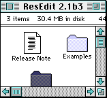
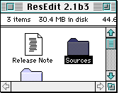
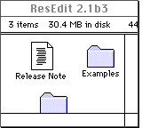
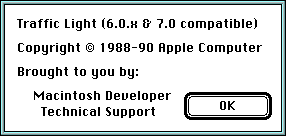
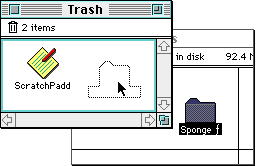

Introduction
System software version 7.0 introduces a new look for the Macintosh desktop. In
order to implement those changes, 'wctb' and 'cctb' resources
have changed in both form and use; it is now up to developers to take the lead
and help the new standard work. The task can be divided into two main areas: in
most cases all developers have to do is to stick to the system resources in
order to provide a homogeneous feel to the user; developers in this group need
only make sure the old 'wctb's are disposed of and that all dialogs and windows
are based on CGrafPorts. The other case is more restricted and involves
developers that need to use their own colors; these applications have to define
the resources using the new templates and do a careful selection of the colors
in order not to break the color scheme implemented by the system.
The good news is that the mechanics of coloring windows through the use of
'wctb' resources is amazingly well documented in Inside
Macintosh Volume V; the bad news is that System 7 uses a new and completely
different scheme for colorizing windows. The new method uses 'wctb'
resources that are different than what is described in Inside Macintosh
Volume V in both their contents and use, and it is no longer recommended that
applications provide their own 'wctb's or that they change system
'wctb' resources at all.
This change is not arbitrary. System 7 establishes a new user interface that
not only presents a new and better-looking appearance for windows, but also
enhances the user perception of function. The new look helps the user find the
place to click in order to produce a certain result.
As with most of the rest of the interface, Apple has already done the research
and testing for you, so let the system do the work, and you can focus on your
application's code. Of course an application can replace the
'wctb' provided by the system, but the results are bound to produce
less-than-desirable results. Back to top
Effects on existing applications
|
Note:
'cctb' resources are now tightly coupled to 'wctb's
(especially for scroll bars) and therefore the discussion about the effects of
the new scheme on old 'wctb's also applies to 'cctb's; the
extent of the effect depends on the type of application.
|
Applications that directly access 'wctb' resources to customize color
windows using only the old resource format will not work; these resources are
different, and the elements that correspond to the old parts perform new
functions or are ignored. Directly accessing 'wctb' resources may
cause system crashes and/or produce really ugly results.
Solution: Revise applications and utilities that manipulate 'wctb's to
take into account the new data structure.
The system will ignore old-style 'wctb' resources; as a result
applications that provide their own pre-System 7 window color table resources
will not get the colors they used to see. The system will use the default look
for the windows. If new style resources are provided, then the entries will be
used according to the new scheme; chances are the results are not going to be
as good as those obtained with the system colors.
Solution: Take away the old resources and get used to the new system colors;
your users will appreciate that your windows are similar to those across the
system. In the few cases where it makes sense, update your resources to the new
templates.
Applications that carry their own 'WDEF' and 'CDEF' resources
will not get the new nice-looking windows provided by the system, and although
these applications should not experience problems since they are doing all the
work themselves, the result will be a negative one from the good user interface
perspective. These applications will have windows with the old look when all
others look modern.
Solution: Developers should revise their applications to include
'WDEF' and 'CDEF' resources that are compatible with the new
color interface. As of this writing, sample code for 'WDEF' can be
found on AppleLink in the following location:
"Developer Support:Developer Services:System Software:
Macintosh US System Software:System 7 Golden Master:Sys7WDEF.PKG"
Certain colors are counted on to produce the correct shades in this new color
interface; applications that completely destroy the color environment of the
system will cause interface problems for the user. In the few cases when the
system can find colors that produce a similar shading effect, the system will
use those colors and display windows using the color interface (although not
the same as all the other windows since the colors are different). When the
system can not come up with a reasonable alternative for the colors it needs,
it reverts to displaying black-and-white windows.
Solution: Developers should revise their applications so that they don't take
over the color environment and don't leave the colors all screwed up when
switching out. Do use the Palette Manager, don't blast color tables, and don't
hog all the available colors. The key to happiness is moderation.
Back to top
The Facts Ma'am, Just the Facts....
The new data structure for 'wctb' resources resembles the old format,
but more "part" fields are now present. The part codes for the new
'wctb's are:
|
Part code:
|
Part it corresponds to:
|
| 0 | wContentColor | Content area of the window |
| 1 | wFrameColor | Frame |
| 2 | wTextColor | Window title color and default text color for dialog buttons |
| 3 | wHiliteColor | Reserved |
| 4 | wTitleBarColor | Reserved |
| 5 | wHiliteColorLight | Used to produce colors in title bar stripes and for grayed |
| text |
| 6 | wHiliteColorDark | Used to produce colors in title bar stripes and for grayed |
| text |
| 7 | wTitleBarLight | Used to produce colors in title bar background |
| 8 | wTitleBarDark | Used to produce colors in title bar background |
| 9 | wDialogLight | Used to produce the colors in a dialog box's beveled frame |
| 10 | wDialogDark | Used to produce the colors in a dialog box's beveled frame |
| 11 | wTingeLight | Used to produce tinges in parts of windows |
| 12 | wTingeDark | Used to produce tinges in parts of windows |
The colors in the windows are generated algorithmically using the colors in the
System 7 'wctb'. Most of the colors are shades between the light and
dark colors. For example, the background color of the title bar is a shade in
between wTitleBarLight and wTitleBarDark. The resulting color
is obtained as described later in this document.
'cctb' resources are also different; here are the part codes and their
corresponding parts for 'cctb':
| Part code: | Part it corresponds to: |
| 0 | cFrameColor | Frames controls |
| 1 | cBodyColor | Background color in buttons |
| 2 | cTextColor | Interior text in buttons and legend for radio buttons and check boxes |
| 3 | cThumbColor | Reserved |
| 4 | cFillPatColor | Reserved |
| 5 | cArrowsColorLight | Used to produce colors in arrows and scroll bar background color |
| 6 | cArrowsColorDark | Used to produce colors in arrows and scroll bar background
color |
| 7 | cThumbLight | Used to produce colors in thumb |
| 8 | cThumbDark | Used to produce colors in thumb |
| 9 | cHiliteLight | (corresponding to wHiliteLight) |
| 10 | cHiliteDark | (corresponding to wHiliteDark) |
| 11 | cTitleBarLight | (corresponding to wTitleBarLight) |
| 12 | cTitleBarDark | (corresponding to wTitleBarDark) |
| 13 | cTingeLight | (corresponding to wTingeLight) Affects 5-6 and 7-8 above |
| 14 | cTingeDark | (corresponding to wTingeDark) |
Back to top
But How Does It Work?
In System 7, windows and scroll bars are drawn in color on a color device 8
bits deep or more (4 bits deep or more in gray-scale devices) independent of
the type of GrafPort. The design gives windows and scroll bars a "gray" look
with subtle color tints around the corners; these tinges are intended to give
the user hints about the functions of the different parts.
When a window is active it will be drawn with the frame in
wFrameColor, the title in wTextColor, and the drag bar, the
scroll bars and all the gadgets (size, zoom, and close boxes) in a gray color
with the edges showing the tints; note that in the context of this Technical
Note gray color can be different from RGB gray (R=G=B); for example, if the
light color is red and the dark color is blue then the "gray" result will be
purple. It is also important to note that the exact gray result may not be
available in the color table of the target device in which case a close
equivalent is used. In the cases when there is no equivalent available, the
system resorts to black-and-white (old-style) windows.
When the window is inactive, the frame is drawn in a grayed
wFrameColor to indicate its disabled state; the drag bar, the gadgets,
and the scroll bar of the window are whited out and the title will be grayed
out (using gray color to display text, not the dithered gray produced with a 50
percent pattern) based on wHiliteColorLight and
wHiliteColorDark. When the gadgets of a scroll bar (thumb and arrows)
are enabled, they are drawn in gray with tinting (coordinated with the color
theme used by the window!); when disabled the thumb disappears altogether and
the arrows show in gray, but with no tinges.
In keeping the overall scheme of color interface, the background pattern of
scroll bars has to be a gray pattern based on cArrowsColorLight and
cArrowsColorDark; when the scroll bar is disabled (when no scrolling
is necessary to show all the items in a window) then the scroll bar will be
displayed in a solid gray. Don't confuse this grayed out state with unselected
windows that present the scroll bars as well as the drag bar and all gadgets
completely whited out.

Figure 1 Active Window--Active scroll bars

Figure 2 Active Window--Horizontal scroll bar disabled

Figure 3 Inactive Window--Notice gray title
Back to top
Dialog and Alert Boxes
Dialog and alert boxes have also been colorized following the same theme
as in windows, but instead of a tinged border, dialog and alert boxes are
displayed with a beveled border outlined with black; the bevel, with its
spectrum of colors spreading between wDialogLight and
wDialogDark as indicated by DialogShades produce a
three-dimensional effect. When a dialog box becomes inactive, the outline
reverts to gray.

Regardless of the port (GrafPort or CGrafPort). dialog and alert boxes are
displayed using the shading scheme when the target device is set to 8 bits per
pixel or more and colors, or when the target device is gray scale and set to 4
bits per pixel or more.
Back to top
Buttons, Radio Buttons, Check Boxes, and Text
Scroll bars are not the only controls affected by 'cctb' resources. In
general the names of the parts give a clear idea of what effect is produced by
a given color. One area that is slightly different is text; the text in buttons
is drawn using cTextColor in a fashion similar to pre-System 7
systems, but when the button is disabled, the new system displays the text
using gray color instead of using dithered gray like it did in earlier
systems.
A gray color is used to draw the text of disabled buttons whenever the dialog
is a CGrafPort and the depth of the target device is 2 bits per pixel or more.
Dialog boxes based on old-style ports will display disabled text using the old
dithered gray.
The text associated with radio buttons and check boxes follows the same
principles. Text is the key to indicate the state (enabled or not) of radio
buttons and check boxes since the body of radio buttons and check boxes is
drawn using cFrameColor whether the control is enabled or not.
Back to top
And for Those Who Eke Out a Living at the Deep End ...
Although readily available, the 'WDEF' code has proven to be a little
bit difficult a source of information for developers wanting to add System 7
color to their own 'WDEF's. The following is an attempt to help those
developers see through the mud.
As mentioned before, the color present in the 'wctb' is used both
directly and as shades obtained by mixing light and dark colors. The question
is which colors and in what proportions; the answer to how to mix the color is
the shade tables found in the 'WDEF':
| Colors from 'wctb' |
| Light Color | Dark Color | Rate | Shade |
|
| HiliteShades | wHiliteLight, wHiliteDark, | $0 | ; wHiliteShade0 |
| wHiliteLight | wHiliteDark, | $7 | ; wHiliteShade7 |
| wHiliteLight | wHiliteDark, | $8 | ; wHiliteShade8 |
| wHiliteLight | wHiliteDark, | $A | ; wHiliteShadeA |
| wHiliteLight | wHiliteDark, | $D | ; wHiliteShadeD |
|
| TitleBarShades | wTitleBarLight, wTitleBarDark | $0 | ; wTitleBarShade0 |
| wTitleBarLight | wTitleBarDark | $1 | ; wTitleBarShade1 |
| wTitleBarLight | wTitleBarDark | $4 | ; wTitleBarShade4 |
|
| DialogShades | wDialogLight, wDialogDark, | $0 | ; wDialogShade0w |
| wDialogLight | wDialogDark, | $4 | ; wDialogShade4w |
| wDialogLight | wDialogDark, | $6 | ; wDialogShade6w |
| wDialogLight | wDialogDark, | $B | ; wDialogShadeBb |
| wDialogLight | wDialogDark, | $F | ; wDialogShadeF |
|
| TingeShades | wTingeLight, wTitleBarDark, | $0 | ; wLTinge0 |
| wTingeLight, | wTingeDark, | $4 | ; wLTinge4 |
| wTitleBarLight | wTingeDark, | $F | ; wDTingeF |
The shade tables contain the light and dark colors plus the "shady" factor for
each case, so wHiliteShadeA is a combination of wHiliteLight
and wHiliteDark and modified by a factor of $A. In simple terms this
means that the dark color is subtracted from the light color and the result is
multiplied by the factor involved. Note that since in this case the colors are
expressed in RGB form the higher rates produce lighter colors.
The shades described above are what the 'WDEF' checks for in each
device it has to draw to. If the shades are available then the window is
rendered using the fancy colors; if the shades are not available then black and
white and, in the case of inactive windows, patterns are used.
Let's use the title bar as an example of how the shades are used. Note that
some colors are directly taken from the 'wctb' and others represent
mixtures of colors:
Title bar itself:Foreground color Background color
(title bar frame)(to clear title bar rectangle)
When window activewFrameColorwTitleBarShade1
(wTitleBarLight+wTitleBarDark, $1)
When window inactivewHiliteShadeAwContentColor
(wHiliteLight+wHiliteDark, $1)
================================================================
Foreground color forLeft-Top sidesRight-Bottom sides
rect inside title bar
(present only when wLTinge0wLTinge4
window active)(wTingeLight+wHiliteDark, $0)
(wTingeLight+wTingeDark, $4)
================================================================
*Title stringForeground color
*When window activeWhen window inactive
*
*wTextColorwHiliteShade7
(wHiliteLight+wHiliteDark, $7)
================================================================
Title bar stripesForeground color
only when window active
wHiliteShade8
(wHiliteLight+wHiliteDark, $8)
|
Back to top
So what about the Drag Manager?
If you have a window with your own color table and things aren't set up just
so, you probably noticed that calls to ShowDragHilite result in a gray
drag hilite instead of the usual color one. The Drag Manager uses the color
table in the window's AuxWinRec to determine the color used for the
hilite. If the window color table:
- doesn't exist,
- doesn't have a minimum number of entries, or
- doesn't have a
wTingeLight and wTingeDark entry,
a default 50% gray is used for the drag highlight color. Often this is
desirable, since the window color-based hilites may clash or be invisible with
your customized window color table, but in some cases you may want the same
color for your hilite regions.

Figure 5. Drag hilite region based on window colors
To stay consistent with what the user chooses in the Colors Control Panel, use
the wTingeLight and wTingeDark entries from the default
window color table (obtained by calling GetAuxWin) as your window's
tinge entries. In order to stay consistent with any changes in the Colors
Control Panel, you may want to compare your tinge entries with the default
entries when you receive an update event, and reset your color table if the
default entries have changed. If a change is made in the Colors Control Panel,
every window on the screen will receive an update event, so you'll catch the
change as soon as it happens:
case updateEvt:
whichWindow = (WindowPtr) mainEventRec.message;
if (TingeColorChanged(whichWindow) == true)
SyncTingeColors(whichWindow);
SetPort(whichWindow);
BeginUpdate(whichWindow);
|
Here's an example showing how to fill in the color table entries after a new
window has been created. Note that this calls GetAuxWin in the
GetWinCTab routine to obtain the System's default window color table:
//----------------------------------------------------------------------------
// SyncTingeColors
//
// Set the tinge colors in this window to the ones found in the default
// window color table.
//----------------------------------------------------------------------------
void SyncTingeColors(WindowPtr theWindow)
{
WCTabHandle newWinCTab;
short index;
newWinCTab = (WCTabHandle) GetWinCTab(theWindow);
if (newWinCTab != nil) {
// OK, we have our window color table, now set it to have
// the System's color table entries for light and dark
// tinges (to match what the user selected in the Colors
// Control Panel.)
CTabHandle defaultWCTB;
RGBColor defaultTingeDark, defaultTingeLight;
Boolean hasEntry;
// Pass a nil to get the default window color table
defaultWCTB = GetWinCTab(nil);
if (defaultWCTB != nil) {
// OK, we have the default color table, set our
// window's tinge entries accordingly
// Get a pointer to the wTingeLight in my window
for (index = (*newWinCTab)->ctSize; index > 0; index --) {
if ((*newWinCTab)->ctTable[index].value == wTingeLight) {
// Our window's color table has an entry for wTingeLight,
// so copy the System's light tinge if we can find it.
hasEntry = GetRGBFromCTable(&defaultTingeLight, defaultWCTB,
wTingeLight);
if (hasEntry == true)
BlockMoveData(&defaultTingeLight,
&(*newWinCTab)->ctTable[index].rgb,
sizeof(RGBColor));
}
}
// Get a pointer to the wTingeDark in my window
for (index = (*newWinCTab)->ctSize; index > 0; index --) {
if ((*newWinCTab)->ctTable[index].value == wTingeDark) {
// Our window's color table has an entry for wTingeDark,
// so copy the System's light tinge if we can find it.
hasEntry = GetRGBFromCTable(&defaultTingeDark,
defaultWCTB, wTingeDark);
if (hasEntry == true)
BlockMoveData(&defaultTingeDark,
&(*newWinCTab)->ctTable[index].rgb,
sizeof(RGBColor));
}
}
}
// Finally, set the color table
SetWinColor(theWindow, newWinCTab);
}
}
//----------------------------------------------------------------------------
// GetWinCTab
//
// Given a Window pointer, this will return the color table associated with
// that window. Note, you can pass nil to this routine to get the default
// window color table. Check out the documentation on GetAuxWin for details.
//----------------------------------------------------------------------------
CTabHandle GetWinCTab(WindowPtr theWindow)
{
CTabHandle returnCTab = nil;
AuxWinHandle defaultAuxWin;
(void) GetAuxWin(theWindow, &defaultAuxWin);
if (defaultAuxWin != nil)
returnCTab = (*defaultAuxWin)->awCTable;
return returnCTab;
}
//----------------------------------------------------------------------------
// GetRGBFromCTable
//
// Fills in a struct with the RGBColor asked for in the whichValue param.
// Returns true if the color is filled in properly, and false if it isn't.
//----------------------------------------------------------------------------
Boolean GetRGBFromCTable(RGBColor *returnColor, CTabHandle colorTable,
short whichValue)
{
Boolean entryFound = false;
short index;
if (colorTable != nil) {
for (index = (*colorTable)->ctSize; index > 0; index --)
if ((*colorTable)->ctTable[index].value == whichValue) {
*returnColor = (*colorTable)->ctTable[index].rgb;
entryFound = true;
break;
}
}
return entryFound;
|
Back to top
And You Thought It Would Never End!
As always, all applications should refrain from nonfriendly practices when
dealing with the color environment; they should use the Palette Manager, and
should never change color tables directly.
Back to top References
Inside Macintosh, Volumes V and VI, Color QuickDraw, Window
Manager, Dialog Manager, and Palette Manager
Snippet GrayWindow & Color Hilites
Snippet WDEFColorSample
WDEF code from AppleLink
Back to top
Change History
|
01-January-1991
|
Originally written.
|
|
01-May-1992
|
In this Note, we have removed mention of
GetGray and added text describing how colorization of windows really
works (kind of).
|
|
01-October-1992
|
Now includes some information on how to obtain
and maintain Drag hilite colors for windows with non-default window color
tables.
|
Back to top
Downloadables
|

|
Acrobat version of this Note (188K).
|
Download
|
|